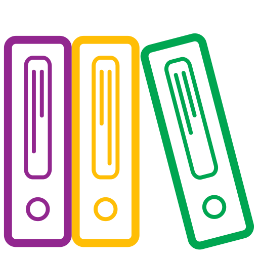

<mat-toolbar
  *ngIf="!enableReadMode"
  color="primary"
  class="mat-elevation-z4 center-on-small-only"
>
  <!-- *ngIf="!enableReadMode" -->
  <mat-toolbar-row>
    <mat-icon style="font-size: 32pt; position: relative; top: -10px;"
      >dashboard</mat-icon
    >
    <!--  -->
    <button
      style="font-size: 17pt; text-align: left; margin-left: 2px;"
      mat-button
    >
      {{ title }}
    </button>
    <button
      mat-flat-button
      *ngIf="authService.loggedIn()"
      class="hide-on-med-and-down "
      style="position: relative; left: 67%;"
      color="primary"
      (click)="logOut(drawer)"
    >
      <!--  -->
      <mat-icon>power_settings_new</mat-icon>
      Terminar Sessão
    </button>
    <button
      mat-flat-button
      *ngIf="!authService.loggedIn()"
      class="hide-on-med-and-down"
      id="btnOnFirstRow2"
      color="primary"
      [routerLink]="['/login']"
    >
      Iniciar Sessão
      <mat-icon>send</mat-icon>
    </button>
  </mat-toolbar-row>

  <mat-toolbar-row id="row2" class="hide-on-small-only">
    <span *ngIf="authService.loggedIn()" class="hide-on-small-only spacer">
      <a [routerLinkActive]="'active'" [routerLink]="['home']" mat-button>
        <mat-icon left>home</mat-icon>
        Home
      </a>
      <a routerLinkActive="active" [routerLink]="['estudantes']" mat-button>
        <mat-icon left>person_pin</mat-icon>
        Estudante
      </a>
      <a routerLinkActive="active" [routerLink]="['cursos']" mat-button>
        <mat-icon>school</mat-icon>
        Curso
      </a>
      <a routerLinkActive="active" [routerLink]="['grupos']" mat-button>
        <mat-icon right>group</mat-icon>
        Grupo
      </a>
      <a routerLinkActive="active" [routerLink]="['projetos']" mat-button>
        <mat-icon right>widgets</mat-icon>
        Projecto
      </a>
      <a
        style="position: relative; left: 30%;"
        routerLinkActive="active"
        (click)="switchBetweenPages()"
        mat-button
      >
        <mat-icon right>collections_bookmark</mat-icon>
        {{ btnMonografiaText }}
      </a>
    </span>
    <span *ngIf="!authService.loggedIn()" class="hide-on-small-only spacer">
      <a [routerLinkActive]="'active'" [routerLink]="['/public']" mat-button>
        <mat-icon left>home</mat-icon>
        Home
      </a>
      <a routerLinkActive="active" [routerLink]="['institutos']" mat-button>
        <mat-icon>school</mat-icon>
        Institutos
      </a>
    </span>
  </mat-toolbar-row>
</mat-toolbar>

<!-- <mat-progress-bar mode="indeterminate" *ngIf="false"></mat-progress-bar> -->

<mat-sidenav-container class="sidenav-container" backgroundColor="primary">
  <mat-sidenav
    #drawer
    class="sidenav"
    fixedInViewport="false"
    backgroundColor="primary"
    [attr.role]="(isHandset$ | async) ? 'dialog' : 'navigation'"
    [mode]="(isHandset$ | async) ? 'over' : 'side'"
    [opened]="((isHandset$ | async) && authService.loggedIn()) === true"
  >
    <div
      style="width: 100%; height: 126px; background-color: #3f51b5; padding: 8px 0px 0px 70px;"
    >
      <div
        style="width: 90px; height: 90px; background-color: #fff; border: 2px solid whitesmoke; border-radius: 50px;"
      >
        <mat-icon
          *ngIf="authService.loggedIn()"
          color="primary"
          style="position: relative; top: 6px; left: 5px; font-size: 60pt;"
          >dashboard</mat-icon
        >

        <mat-icon
          *ngIf="!authService.loggedIn()"
          color="primary"
          style="position: relative; top: 6px; left: 5px; font-size: 60pt;"
          >domain</mat-icon
        >
      </div>
    </div>
    <mat-toolbar *ngIf="authService.loggedIn()">
      <h2 style="text-align: center; width: 90%;">
        Menu Principal
      </h2>
    </mat-toolbar>

    <mat-toolbar *ngIf="!authService.loggedIn()">
      <h2 style="text-align: center; width: 90%;">
        Institutos Médios
      </h2>
    </mat-toolbar>

    <mat-divider> </mat-divider>

    <mat-nav-list>
      <div *ngIf="authService.loggedIn()">
        <a mat-list-item routerLinkActive="active" [routerLink]="['home']">
          <mat-icon color="primary">home</mat-icon>
          Home
        </a>
        <a
          mat-list-item
          routerLinkActive="active"
          [routerLink]="['estudantes']"
        >
          <mat-icon color="primary">person_pin</mat-icon>
          Estudante
        </a>
        <a
          mat-list-item
          routerLinkActive="active"
          [routerLink]="['orientadores']"
        >
          <mat-icon color="primary">recent_actors</mat-icon>
          Orientador
        </a>
        <a mat-list-item routerLinkActive="active" [routerLink]="['cursos']">
          <mat-icon color="primary">school</mat-icon>
          Curso
        </a>
        <a
          mat-list-item
          routerLinkActive="active"
          [routerLink]="['especialidades']"
        >
          <mat-icon color="primary">beenhere</mat-icon>
          Especialidade
        </a>
        <a mat-list-item routerLinkActive="active" [routerLink]="['turmas']">
          <mat-icon color="primary">home</mat-icon>
          Turma
        </a>
        <a mat-list-item routerLinkActive="active" [routerLink]="['grupos']">
          <mat-icon color="primary">group</mat-icon>
          Grupo
        </a>
        <a mat-list-item routerLinkActive="active" [routerLink]="['projetos']">
          <mat-icon color="primary">widgets</mat-icon>
          Projecto
        </a>
        <a
          mat-list-item
          routerLinkActive="active"
          [routerLink]="['monografias']"
        >
          <mat-icon color="primary">collections_bookmark</mat-icon>
          Monografia
        </a>
        <a
          mat-list-item
          routerLinkActive="active"
          [routerLink]="['departamentos']"
        >
          <mat-icon color="primary">domain</mat-icon>
          Departamento
        </a>
        <a
          mat-list-item
          routerLinkActive="active"
          [routerLink]="['institutos/private-list']"
        >
          <mat-icon color="primary">domain</mat-icon>
          Instituto
        </a>
        <mat-divider></mat-divider>
        <a mat-list-item routerLinkActive="active" [routerLink]="['sobre']"
          ><mat-icon color="primary">info</mat-icon>
          Sobre
        </a>

        <a mat-list-item (click)="logOut(drawer)"
          ><mat-icon color="primary">power_settings_new</mat-icon>
          Terminar Sessão
        </a>
      </div>

      <div *ngIf="!authService.loggedIn()">
        <div>
          <mat-form-field class="field-max">
            <input
              #search
              matInput
              width="100px"
              type="text"
              [(ngModel)]="institutoFilter"
              (keyup)="findInstituto()"
              placeholder="Procurar"
            />
            <span matSuffix><mat-icon color="primary">search</mat-icon></span>
          </mat-form-field>
        </div>

        <button
          mat-button
          (click)="clearSelectedSchool()"
          style="width: 100%; margin-top: -20px; margin-bottom: 20px; text-align: center;"
        >
          <mat-icon color="primary">refresh</mat-icon>
          Todas monografias
        </button>

        <a
          *ngFor="let item of institutos"
          mat-list-item
          (click)="schoolClicked(item)"
        >
          <div
            style="background: #3f51b5; padding: 5px; align-content: center; align-items: center; margin: 5px; border: 1px solid #3f51b5; border-radius: 25px; width: 30px; height: 30px;"
          >
            <mat-icon
              style="color: white; position: relative; left: 2px; top: 1px;"
              >school</mat-icon
            >
          </div>
          {{ item.nome }}
        </a>
      </div>
    </mat-nav-list>
  </mat-sidenav>

  <mat-sidenav-content>
    <mat-toolbar color="primary" *ngIf="!enableReadMode">
      <mat-toolbar-row>
        <button
          type="button"
          aria-label="Toggle sidenav"
          mat-icon-button
          (click)="drawer.toggle()"
        >
          <mat-icon aria-label="Side nav toggle icon">menu</mat-icon>
        </button>

        <span [ngClass]="'context-title'">
          {{ contextMenu }}
        </span>
        <span
          class="dateIcon hide-on-med-and-down"
          [hidden]="emitShowAddButton"
        >
          <button
            mat-button
            [routerLink]="['monografias/add']"
            style="position: relative; bottom: 10px; right: 50%;"
          >
            <mat-icon class="mat-0">cloud_upload</mat-icon>
            Nova Monografia
          </button>
        </span>
        <span
          class="dateIcon hide-on-med-and-down"
          [hidden]="!showDateSelect || !onChangeContext"
        >
          <mat-icon class="mat-0">date_range</mat-icon>
        </span>
        <span
          class="ano-lectivo hide-on-med-and-down"
          [hidden]="!showDateSelect || !onChangeContext"
        >
          <form [formGroup]="formGroup01">
            <mat-form-field class="mat-form-field-infix">
              <mat-select
                matInput
                formControlName="ano"
                class="mat-form-field-infix"
              >
                <ng-container *ngFor="let year of years">
                  <mat-option [value]="year">
                    {{ year }}
                  </mat-option>
                </ng-container>
              </mat-select>
            </mat-form-field>
          </form>
        </span>
      </mat-toolbar-row>
    </mat-toolbar>
    <div>
      <div>
        <router-outlet></router-outlet>
      </div>
      <div id="my-footer">
        <app-footer></app-footer>
      </div>
    </div>
  </mat-sidenav-content>
</mat-sidenav-container>
